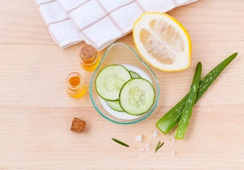

The Importance of Self-Care
Self-Care can improve your mental health and not only make you
happier, but make others around you as well. Once you take care of
yourself, you can help others as well. There are many different
types of Self-Care.
The different types of Self-Care are:
- Physical: improves your
physical health and well-being
- Mental: stimulates and
focuses your brain
- Emotional: helps you
connect, acknowledge, and reflect on your emotions
- Practical: helps make your
life less stressful and more productive
- Social: nurtures your relationships
- Spiritual: nurtures your
spirit
Self-Care Ideas
- Physical:
- Create a basic skin-care routine
- Morning: Cleanse → Acne Medications → Moisturizer →
Sunscreen
- Evening: Cleanse → Face Mask → Acne Medications →
Moisturizer
- Develop a regular sleep routine
- According to CDC.gov, this is how much sleep you should be
getting:
- Ages 6-12: 9-12 hours
- Ages 13-18: 8-10 hours
- Ages 18+: 7+ hours
- Drink water
- You should be drinking 8 8-oz glasses of water per day
- Take a bath
- Workout (see Fitness)
- Take a nap

- Mental:
- Read a book/Listen to an audiobook
- You can reread your favorite book, or search up some
recommendations in your favorite genre online!
- Listen to your favorite songs and maybe try listening to a
different genre
- Watch funny YouTube videos
- Watch a TEDtalk
- Learn something new
- Try a new recipe (see Nutrition)
- Solve a puzzle
- Jigsaws, crosswords, word searches, sudokus, or coloring
pages (you can find printables online)
- Emotional:
- Write 10 things you’re grateful for
- Have a movie night or binge-watch shows
- Write 3 good things you did each day
- Make time out of your day to relax and do what you want to do!
- Practical:
- Declutter 1 room in your house each day
- Change the layout of your room
- You can go on Pintrest to get inspiration
- Organize
- This can be your music playlists, your workspace, your
closet, your Google Drive, your email, etc.
- Create a bucket list — what do you dream of doing?
- Set out the clothes you’re going to wear for the week in
advanced
- Social:
- Write cards to your friends and family
- Make time to call your family every week (if you don’t live
with them)
- Host a game or movie night with your friends
- Spiritual:
- Meditate
- A simple exercise you can try (HeadSpace has more guided
meditations)
- Set an alarm in case you fall asleep!
- Sit in a comfortable position with your back straight
- Focus on 1 part of your breathing (ex. the air flowing out
your nose or your belly rising and falling)
- Start becoming aware of the sounds, smells, and sensations
around you
- If your mind starts to overthink, return to focusing on
just your breathing
- Yoga
- There are several yoga instructors who post on YouTube
- Mindful walking
- Go for a walk outside and focus on the sounds, smells, and
sensations around you without judging if they’re good or bad;
just let them exist
- Try spending a day without your phone
- Pray